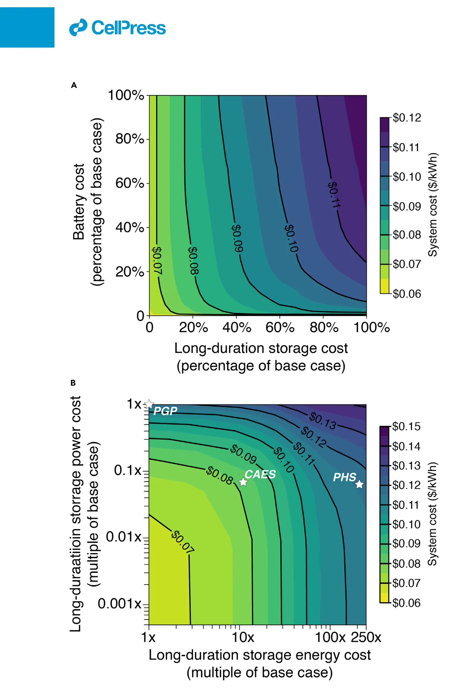

Role of long-duration energy storage in variable renewable electricity systems
Key finding. Introducing long-duration storage lowers total system costs relative to wind-solar-battery systems, and system costs are twice as sensitive to reductions in long-duration storage costs as to reductions in battery costs.

What question did this research address?
An electricity system built on wind and solar has to bridge gaps between generation and demand. Batteries bridge hours; something else is needed to bridge seasons.
This paper asked what role long-duration storage — ten hours or greater — plays in least-cost, fully reliable systems, and how the value of improving it compares with the value of improving batteries.
What did we find?
The analysis uses 39 years of hourly United States weather data in a macro-scale energy model, evaluating capacities and dispatch in least-cost, 100 per cent reliable systems with wind and solar generation supported by both long-duration storage and batteries.
System cost responds twice as strongly to cheaper long-duration storage as to cheaper batteries, which makes the former the more valuable target for cost reduction.
The two technologies do different jobs rather than competing. In least-cost systems batteries are used primarily for intra-day storage while long-duration storage handles inter-seasonal and multi-year variation.
Dependence on long-duration storage increases when the system is optimized over more years of weather data, because longer records contain the rare, extended shortfalls that shorter records miss.
Why does it matter?
The multi-year result is a warning about method as much as a finding about storage. A system designed against a few years of weather will understate how much long-duration storage it needs, and the shortfall appears only in the years that were not modelled.
The sensitivity comparison also has a clear implication for research priorities. If system cost responds twice as strongly to long-duration storage cost, then effort spent making that cheaper buys more than the equivalent effort spent on batteries.
Citation, data, and code
Jacqueline A. Dowling, Katherine Z. Rinaldi, Tyler H. Ruggles, Steven J. Davis, Mengyao Yuan, Fan Tong, Nathan S. Lewis, and Ken Caldeira (2020). Role of long-duration energy storage in variable renewable electricity systems. Joule 4, 1907-1928.
Related
- What does a reliable electricity system built on wind and solar actually need?
- The influence of regional geophysical resource variability on the value of single- and multistorage technology portfolios (Li et al., 2024)
- Effects of deep reductions in energy storage costs on highly reliable wind and solar electricity systems (Tong et al., 2020)